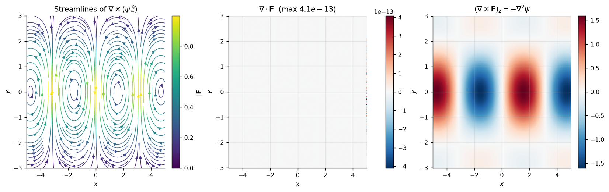
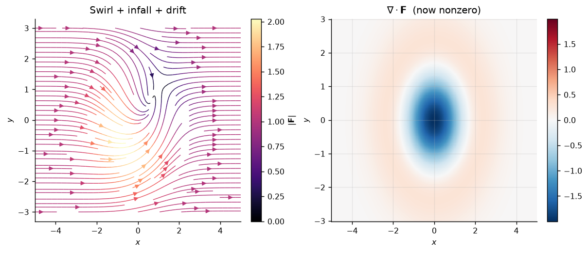
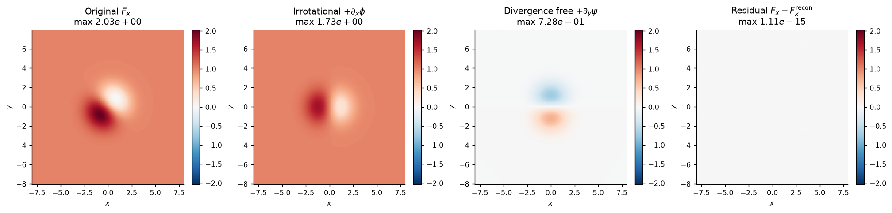

Numerical projects across vector calculus, differential equations, linear algebra, numerical methods, classical mechanics, statistical mechanics, and astrophysics. Each project states a physical claim, implements the governing equations, and verifies the result numerically against theory.
A field built as F = curl(ψ ẑ) is divergence free identically; a field with nonzero divergence admits no stream function; and any periodic field splits uniquely into an irrotational and a divergence free piece.

| Claim under test | Measured | Theory | Verdict |
|---|---|---|---|
| Stream function field is divergence free | 4.1×10−13 relative | 0 (exact) | confirmed |
| Numerical curl equals −∇²ψ | order 2.00 | O(h²) | confirmed |
| No stream function for a compressible field | 0.99 relative divergence | ≠ 0 | confirmed |
| Helmholtz reconstruction of the field | 5.5×10−16 relative | 0 | confirmed |
| Each piece satisfies its defining condition | 2.4×10−4 | 0 | confirmed |


Two bugs produced confident, wrong output and are documented in the notebook because both are easy to repeat.
A wrong sign in the irrotational piece. The potentials
φ and ψ were correct, but the reconstruction used
−∇φ instead of +∇φ. Every per-component
check still passed; only the reconstruction residual exposed it, at 1.2 — larger
than the field itself.
An analytic reference that was wrong. Differentiating sin x e−0.3y² as though the first factor were x gives the wrong Laplacian. The error was constant under refinement, which is the signature of a bad reference rather than a bad scheme — and a convergence table that refuses to move is what catches it.
02 ODE phase portraits · 03 rank-1 SVD blackbody extraction · 04 numerical convergence suite · 05 residue theorem integrals · 06 Poisson solver by finite differences · 07 two-body orbits · 08 hydrogen by finite differences · 09 Ising Metropolis · 10 blackbody explorer · 11 Lane-Emden polytropes · 12 exoplanet radial velocity detection